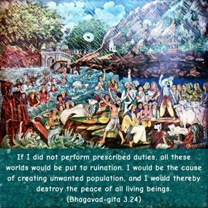
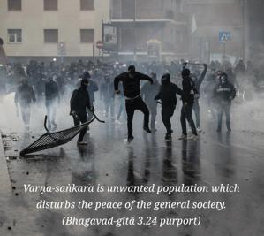
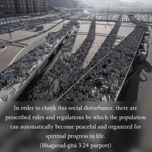
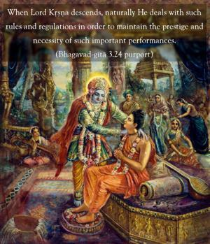
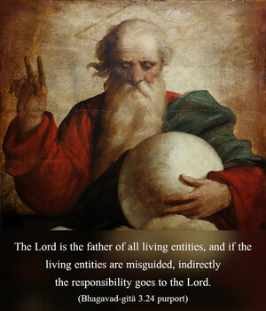
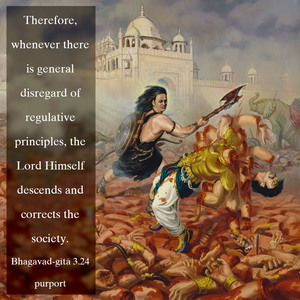

If I did not perform prescribed duties, all these worlds would be put to ruination. I would be the cause of creating unwanted population, and I would thereby destroy the peace of all living beings.






Varṇa-saṅkara is unwanted population which disturbs the peace of the general society. In order to check this social disturbance, there are prescribed rules and regulations by which the population can automatically become peaceful and organized for spiritual progress in life. When Lord Kṛṣṇa descends, naturally He deals with such rules and regulations in order to maintain the prestige and necessity of such important performances. The Lord is the father of all living entities, and if the living entities are misguided, indirectly the responsibility goes to the Lord. Therefore, whenever there is general disregard of regulative principles, the Lord Himself descends and corrects the society. We should, however, note carefully that although we have to follow in the footsteps of the Lord, we still have to remember that we cannot imitate Him. Following and imitating are not on the same level. We cannot imitate the Lord by lifting Govardhana Hill, as the Lord did in His childhood. It is impossible for any human being. We have to follow His instructions, but we may not imitate Him at any time. The Śrīmad-Bhāgavatam (10.33.30–31) affirms:
naitat samācarej jātu
manasāpi hy anīśvaraḥ
vinaśyaty ācaran mauḍhyād
yathārudro ’bdhi-jaṁ viṣam
īśvarāṇāṁ vacaḥ satyaṁ
tathaivācaritaṁ kvacit
teṣāṁ yat sva-vaco-yuktaṁ
buddhimāṁs tat samācaret
“One should simply follow the instructions of the Lord and His empowered servants. Their instructions are all good for us, and any intelligent person will perform them as instructed. However, one should guard against trying to imitate their actions. One should not try to drink the ocean of poison in imitation of Lord Śiva.”
We should always consider the position of the īśvaras, or those who can actually control the movements of the sun and moon, as superior. Without such power, one cannot imitate the īśvaras, who are superpowerful. Lord Śiva drank poison to the extent of swallowing an ocean, but if any common man tries to drink even a fragment of such poison, he will be killed. There are many pseudo devotees of Lord Śiva who want to indulge in smoking gañjā (marijuana) and similar intoxicating drugs, forgetting that by so imitating the acts of Lord Śiva they are calling death very near. Similarly, there are some pseudo devotees of Lord Kṛṣṇa who prefer to imitate the Lord in His rāsa-līlā, or dance of love, forgetting their inability to lift Govardhana Hill. It is best, therefore, that one not try to imitate the powerful, but simply follow their instructions; nor should one try to occupy their posts without qualification. There are so many “incarnations” of God without the power of the Supreme Godhead.